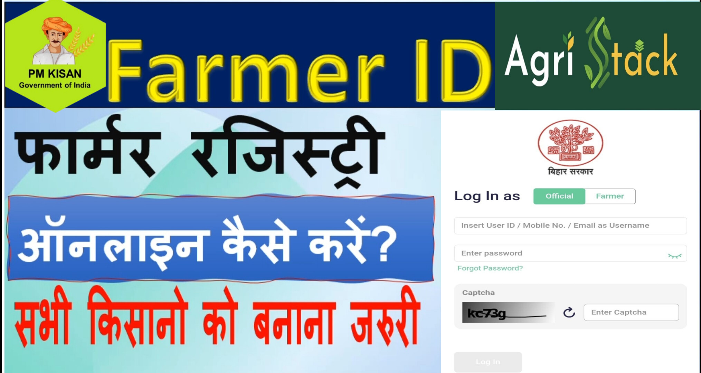

Bihar Farmer Registration Online 2026
Bihar Farmer Registration Online 2026: बिहार में फार्मर रजिस्ट्रेशन शुरू कैसे बनाएं अपना फार्मर आईडी

Bihar Farmer Registration Online 2026: बिहार के किसानों के लिए एक बड़ी खुशखबरी सामने आई है। अब खेती-किसानी से जुड़े हर लाभ को सीधे और पारदर्शी तरीके से किसानों तक पहुँचाने के लिए Bihar Farmer Registry 2025 की शुरुआत की गई है। इस रजिस्ट्रेशन के जरिए किसान अपनी पहचान, जमीन, फसल और बैंक से जुड़ी जानकारी सरकार के पोर्टल पर दर्ज कर सकेंगे, जिससे उन्हें हर सरकारी योजना, सब्सिडी, बीमा या आर्थिक सहायता का लाभ सीधे उनके खाते में मिल सकेगा – बिना किसी बिचौलिए के।
इस लेख में हम आपको बिल्कुल सरल भाषा में बताएंगे कि Bihar Farmer Registration Online क्या है, इसका उद्देश्य क्या है, इससे किसानों को क्या फायदे होंगे, और आप इसे ऑनलाइन या ऑफलाइन कैसे कर सकते हैं। साथ ही, हम आपको यह भी बताएंगे कि इस प्रक्रिया के लिए किन दस्तावेजों की जरूरत होगी और आवेदन करने का सही तरीका क्या है।
Ration Card Bihar Online Apply 2026: Overviews
| लेख का नाम | Bihar Farmer Registration Online |
|---|
| लेख का प्रकार | Sarkari Yojana |
|---|
| योजना का नाम | ihar Farmer Registratio |
|---|
| योजना का विभाग | बिहार कृषि विभाग |
|---|
| लाभार्थी | राज्य के सभी किसान |
|---|
| आवेदन मोड | ऑनलाइन और ऑफलाइन दोनों |
|---|
| आधिकारिक वेबसाइट | pmkisan.gov.in |
|---|
Social Button
किसान रजिस्ट्री क्या है- Bihar Farmer Registration Online
Farmer Registry एक केंद्रीकृत डिजिटल प्लेटफॉर्म है, जिसमें किसान की पहचान, खेती की ज़मीन, फसल की जानकारी, बैंक खाता आदि डिटेल्स रजिस्टर की जाती हैं। इसका मकसद यह है कि किसानों को सभी योजनाओं का लाभ सीधे उनके बैंक खाते में ट्रांसफर किया जा सके और बिचौलियों की भूमिका को खत्म किया जा सके।
रजिस्ट्रेशन का उद्देश्य- Bihar Farmer Registry Online
✅ एकीकृत किसान डेटाबेस तैयार करना:-
राज्य के सभी किसानों का डेटा एक ही प्लेटफॉर्म पर संग्रहीत किया जाएगा।
✅ DBT (Direct Benefit Transfer):-
किसानों को सभी योजनाओं का लाभ सीधे बैंक खाते में मिलेगा।
✅ नीति निर्माण में मदद:-
सरकार को सटीक आंकड़े मिलेंगे जिससे कृषि नीतियां बेहतर बनाई जा सकेंगी।
✅ आपदा के समय राहत:-
सूखा, बाढ़ या फसल क्षति की स्थिति में त्वरित सहायता संभव होगी।
Bihar Farmer Registry Online Apply Process 2026
-
Step 1: ऑफिसियल वेबसाइट पर जाएं
सबसे पहले नीचे दिए गए लिंक पर क्लिक करें:
🔗 https://bhfr.agristack.gov.in/farmer-registry-bh/#/
-
Step 2: “New Registration” पर क्लिक करें
- होमपेज पर आपको “किसान पंजीकरण (Farmer Registration)” का विकल्प मिलेगा
- उस पर क्लिक करें और “New Registration” सिलेक्ट करें
-
Step 3: आधार नंबर दर्ज करें और OTP से सत्यापन करें
अपना आधार नंबर दर्ज करें
रजिस्टर्ड मोबाइल नंबर पर OTP आएगा, उसे दर्ज करें और आगे बढ़ें
-
Step 4: फॉर्म भरें
अपना पूरा नाम, पता, उम्र और मोबाइल नंबर भरें।
ज़मीन का विवरण (खाता संख्या, खसरा/खतौनी, क्षेत्रफल) दर्ज करें
किस फसल की खेती करते हैं – यह जानकारी दें
सिंचाई साधन और कृषि यंत्रों की जानकारी भी दें
बैंक खाता नंबर और IFSC कोड भरें
-
Step 5: दस्तावेज अपलोड करें
- आधार कार्ड की स्कैन कॉपी
- भूमि रिकॉर्ड (खसरा, खतौनी, दाखिल खारिज)
- बैंक पासबुक की स्कैन कॉपी
Bihar Farmer ID Registration 2026: फार्मर रजिस्ट्रेशन करवाने के फायदे
Farmer ID बनवाने से किसानों को कई बड़े फायदे मिलेंगे—
- अलग-अलग सरकारी योजनाओं का लाभ बिना बार-बार सत्यापन
- न्यूनतम समर्थन मूल्य (MSP) पर फसल बिक्री में सुविधा
- फसल नुकसान होने पर वास्तविक क्षति का सही मुआवजा
- प्रत्येक किसान की डिजिटल पहचान
- PM किसान सम्मान निधि का लाभ बिना किसी रुकावट
- भूमि, फसल और किसान डेटा सुरक्षित डिजिटल प्लेटफॉर्म पर
Bihar Farmer ID Registration 2026: आवश्यक दस्तावेज
Farmer ID बनवाने के लिए निम्नलिखित दस्तावेज जरूरी हैं—
- आधार कार्ड
- मोबाइल नंबर (आधार से लिंक)
- भूमि से संबंधित दस्तावेज
- ऑनलाइन जमाबंदी
- खाता संख्या
- खेसरा संख्या
Bihar Farmer ID Registration 2026: ऐसे करवायें फार्मर आईडी रजिस्ट्रेशन
- फार्मर रजिस्ट्री के लिए आवेदन ऑफलाइन के माध्यम से लिए जायेगे | इसके लिए आवेदन किस प्रकार से करना है इसके बारे में निचे विस्तार में जानकारी दी गई है |
- अपना फार्मर रजिस्ट्रेशन करवाने के लिए आपको अपने सभी जरुरी दस्तावेजो के साथ कृषि विभाग एवं राजस्व विभाग क्षेत्रीय कर्मचारियों से संपर्क करना होगा | इसके बाद उनके द्वारा आपका फार्मर रजिस्ट्रेशन किया जायेगा |
- कृषको द्वारा सरकारी योजनाओ का सहज और शीघ्र लाभ प्राप्त करने के लिए फार्मर रजिस्ट्री आवश्यक है , इसलिए किसान भाइयो एवं बहनों आज ही अपने किसान सलाहकार / किसान समन्वयक / हल्का कर्मचारी से संपर्क कर फार्मर रजिस्ट्री बनवाएं
- Note- इसके साथ ही साथ फार्मर आईडी खुद से ऑनलाइन भी बनाया जा सकता है लेकिन इसके लिए आपको सीएससी से लॉगिन करके ही बनाना होगा तो अगर आपके पास सीएससी आईडी है तो बढ़िया आसानी से सीएससी से लॉगिन करके फार्मर आईडी रजिस्ट्रेशन कर सकते हैं
How To Apply (Video)
Bihar Farmer ID Registration Status कैसे चेक करें?
इसके लिए आपको सबसे पहले इसके ऑफिसियल वेबसाइट पर जाना होगा |
इसका लिंक आपको निचे मिल जायेगा |
वहां जाने के बाद आपको “Check Enrollment Status” का विकल्प मिलेगा |
जिस पर आपको क्लिक करना होगा |
इसके बाद आपके सामने एक नया पेज खुलेगा |
जहाँ आपको तीन विकल्प (Aadhaar Number, Enrollment ID और Farmer Id) मिलेंगे |
आप जिस भी माध्यम से स्टेटस चेक करना चाहते है |
आपको उसका चयन करना होगा |
इसके बाद आपको अपने चयन के अनुसार जानकारी डालकर Check पर क्लिक कर देना है |
इसके बाद आपके सामने इसका स्टेटस खुलकर आ जायेगा |
Important Links